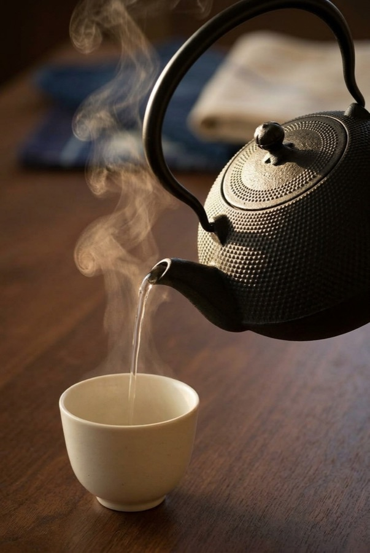

"Mellows the tea" is a claim you'll see on every tetsubin listing. Here's the actual chemistry behind it, the real reason for the bumpy texture, and the one thing most listings don't tell you about how to use it.
See current price on Amazon →As an Amazon Associate, I earn from qualifying purchases.
Tea is rich in polyphenols — tannins and catechins — and iron ions react readily with them. That reaction is real chemistry, not folklore: it's the same interaction that softens the tannins responsible for tea's bitterness and astringency, rounding out the flavor and adding trace amounts of bioavailable iron to the water.
That reaction is strong — strong enough that if you steep tea leaves directly inside an unlined cast iron pot for a long soak, the iron strips out too much tannin and the tea turns flat and metallic. The traditional (and correct) use of a tetsubin like this one is to boil water in it, then pour that water over leaves in a separate teapot or cup. Brief contact is the whole trick: enough to soften the water, not enough to over-extract it.
The arare (hailstone) pattern covering the body is pressed by hand into the mold while it's still wet, dot by dot. It's the signature look of Nanbu Tekki ironware, but it's functional first: the raised dots increase the kettle's surface area, which helps it heat more evenly and hold that heat longer once it's off the flame.
This kettle comes from Oigen, founded in 1852 by Oikawa Genjuro in Mizusawa, a district of Oshu City in Iwate Prefecture — one of only two Nanbu Tekki foundries with a real presence outside Japan. The craft itself traces back to the Nambu samurai clan's patronage in the mid-Edo period, and pieces made this way, with proper care, are routinely used for well over a century.
Oigen Maromi Arare Cast Iron Tetsubin Kettle — 1.2 liter capacity, sand-cast in Mizusawa, Iwate, Japan, all-black finish.
See current price on Amazon →As an Amazon Associate, I earn from qualifying purchases.
This page contains an affiliate link — if you buy through it, it costs you nothing extra and helps support this site.